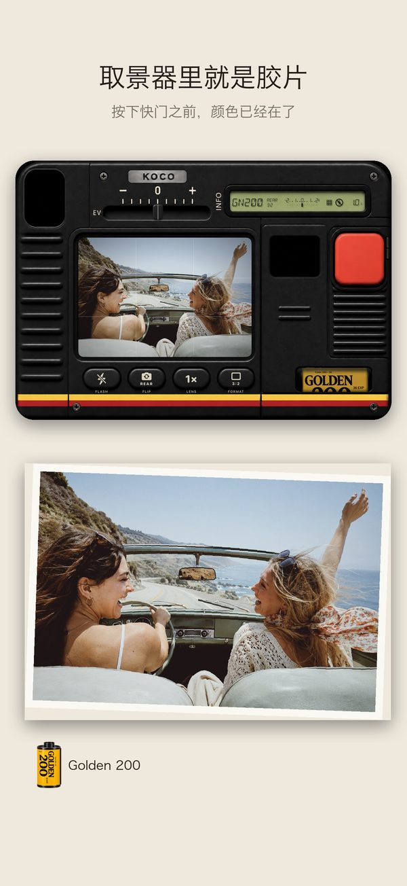
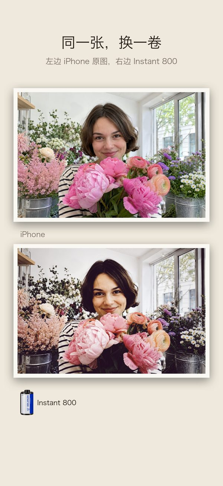
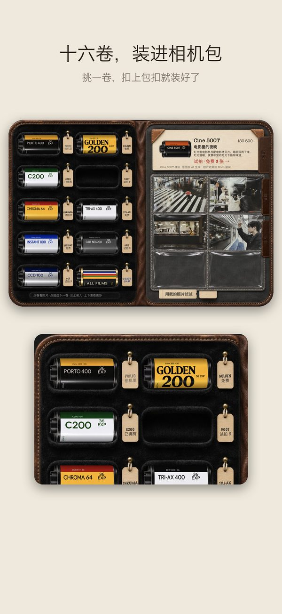
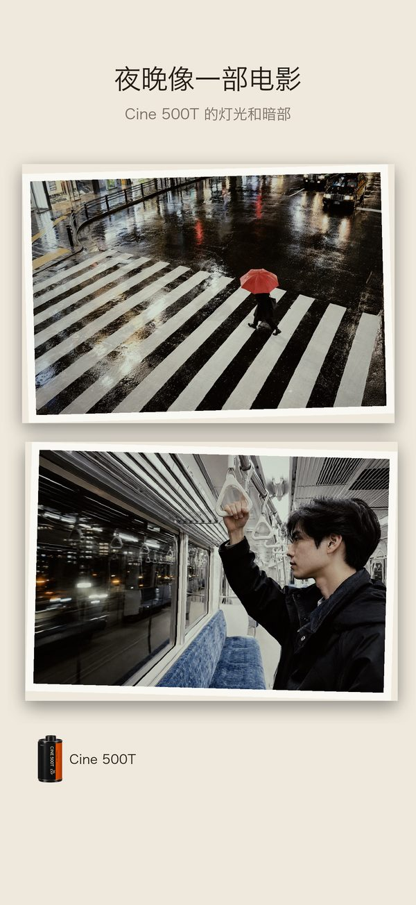
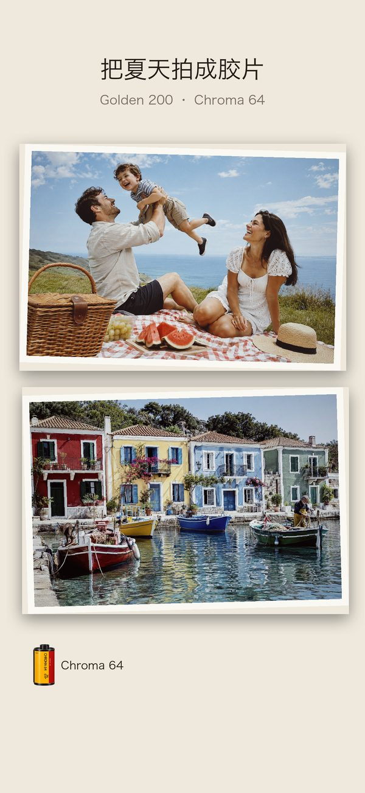
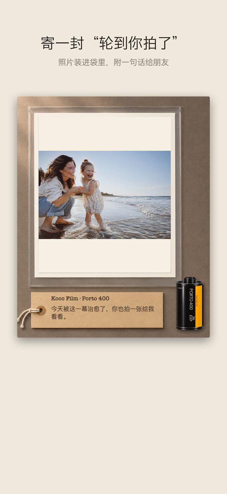
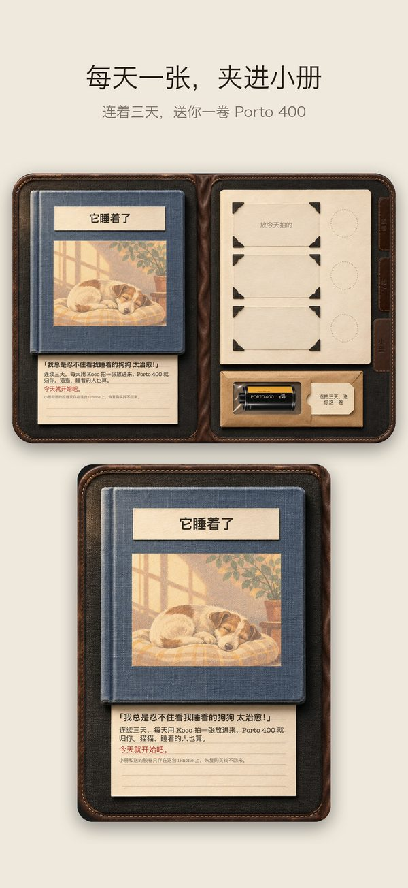
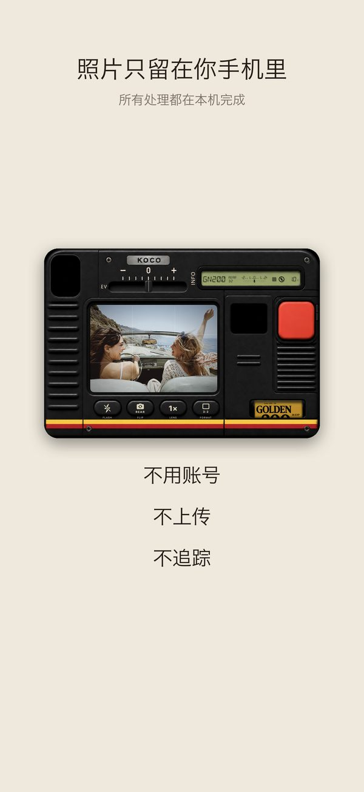

<title>Koco Duo 截图样稿</title>
<meta name="claude:viewport-fit-sides" content="cover">
<style>
:root{--bg:#f3efe6;--fg:#201c17;--muted:#6f675c;--line:#ddd5c6;--accent:#b23b1e}
@media (prefers-color-scheme:dark){:root:not([data-theme="light"]){--bg:#15130f;--fg:#ede7db;--muted:#9b9284;--line:#332e27;--accent:#ec7b52;color-scheme:dark}}
:root[data-theme="dark"]{--bg:#15130f;--fg:#ede7db;--muted:#9b9284;--line:#332e27;--accent:#ec7b52;color-scheme:dark}
body{background:var(--bg);color:var(--fg);font:16px/1.65 -apple-system,"PingFang SC",system-ui,sans-serif;padding-left:max(16px,env(safe-area-inset-left,0px));padding-right:max(16px,env(safe-area-inset-right,0px));padding-block:22px 48px}
main{max-width:900px;margin:0 auto}h1{font-size:22px;margin:0 0 4px}
.sub{color:var(--muted);font-size:14px;margin:0 0 18px;max-width:70ch}
figure{margin:0}.grid{display:grid;grid-template-columns:repeat(auto-fill,minmax(150px,1fr));gap:14px;margin:0 0 22px}img{width:100%;height:auto;border-radius:10px;display:block;border:1px solid var(--line)}
figcaption{font-size:14px;color:var(--muted);margin-top:6px}
.tbl{overflow-x:auto}table{border-collapse:collapse;min-width:620px;font-size:14px}td,th{border-bottom:1px solid var(--line);padding:6px 8px;text-align:left;vertical-align:top}
</style>
<main>
<h1>App Store 截图样稿（普通 iPhone 竖屏 · 按竞品方向）</h1>
<p class="sub">你选了“相机整屏 + 成片整屏”。这是普通 iPhone（6.9 寸，1320×2868）的 8 张：暖白纸色底，不套手机框，相机/相机包整块放，成片做成大张照片，角落一个小胶卷罐和卷名。标题位置是占位，你写好 8 条（中文就行）贴在决定页 B11-copy 里，我再出中英文正式版；Duo 横屏用同样画面重排。成片用的是样张原图（AI 生成）经 Koco 实时渲染。</p>
<div class="grid"><figure><figcaption>第 1 张：外屏机身（取景窗里套着胶片）＋ 拍出来的那张</figcaption></figure><figure><figcaption>第 2 张：同一张照片：iPhone 原图 / Instant 800</figcaption></figure><figure><figcaption>第 3 张：相机包：一排胶卷罐 + 这卷的卡片</figcaption></figure><figure><figcaption>第 4 张：两张 Cine 500T 夜景</figcaption></figure><figure><figcaption>第 5 张：Golden 200 和 Chroma 64 的夏天</figcaption></figure><figure><figcaption>第 6 张：“轮到你拍了”来信图</figcaption></figure><figure><figcaption>第 7 张：小册「它睡着了」</figcaption></figure><figure><figcaption>第 8 张：不用账号 · 不上传 · 不追踪</figcaption></figure></div>
<h2 style="font-size:18px">8 张各自的画面</h2>
<div class="tbl"><table><tr><th>#</th><th>画面</th><th>标题 / 副标题</th></tr><tr><td>1</td><td>外屏机身（取景窗里套着胶片）＋ 拍出来的那张</td><td>（你写）</td></tr><tr><td>2</td><td>同一张照片：iPhone 原图 / Instant 800</td><td>（你写）</td></tr><tr><td>3</td><td>相机包：一排胶卷罐 + 这卷的卡片</td><td>（你写）</td></tr><tr><td>4</td><td>两张 Cine 500T 夜景</td><td>（你写）</td></tr><tr><td>5</td><td>Golden 200 和 Chroma 64 的夏天</td><td>（你写）</td></tr><tr><td>6</td><td>“轮到你拍了”来信图</td><td>（你写）</td></tr><tr><td>7</td><td>小册「它睡着了」</td><td>（你写）</td></tr><tr><td>8</td><td>不用账号 · 不上传 · 不追踪</td><td>（你写）</td></tr></table></div>
</main>
